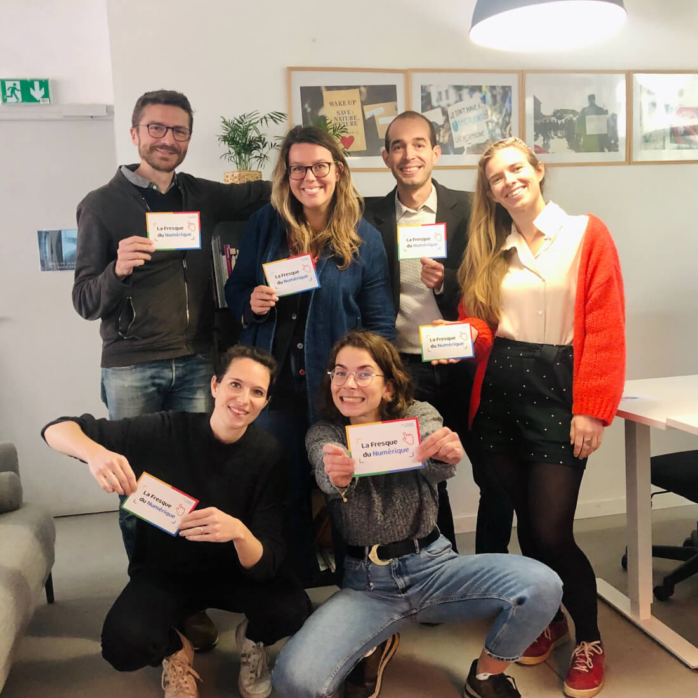

Recrutement
Intégrez l’équipe des permanent·e·s pour contribuer à déployer l'atelier, sensibiliser aux problèmes environnementaux du numérique, et ainsi contribuer à un mouvement de prise de conscience et de transformation vers des modèles de vie plus soutenables !
Offres d'emploi et de stage
Vous pouvez retrouver toutes nos offres d'emploi et de stage en cours sur notre page carrière.
Candidatures spontanées
Vous pouvez aussi nous envoyer une candidature spontanée à admin@fresquedunumerique.org
